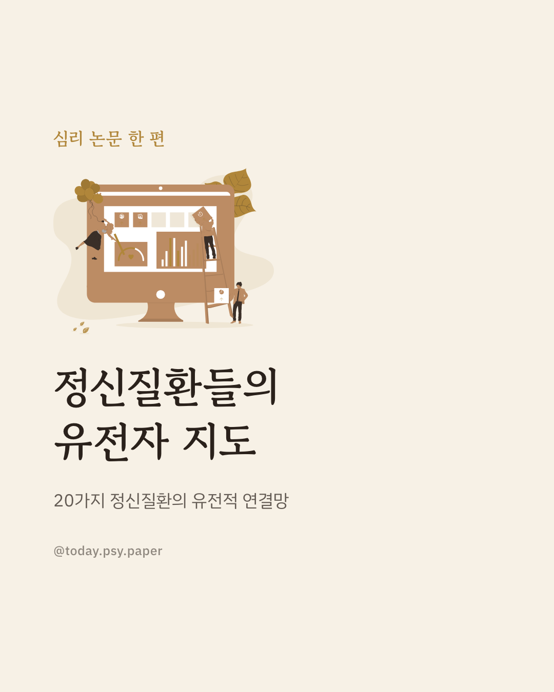
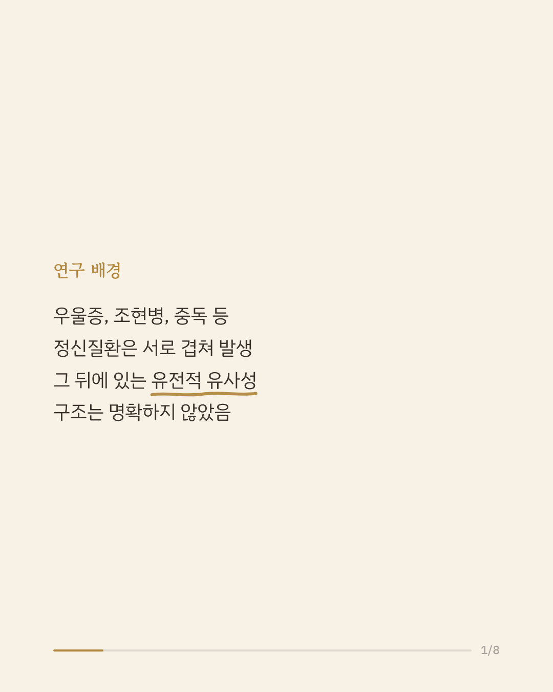
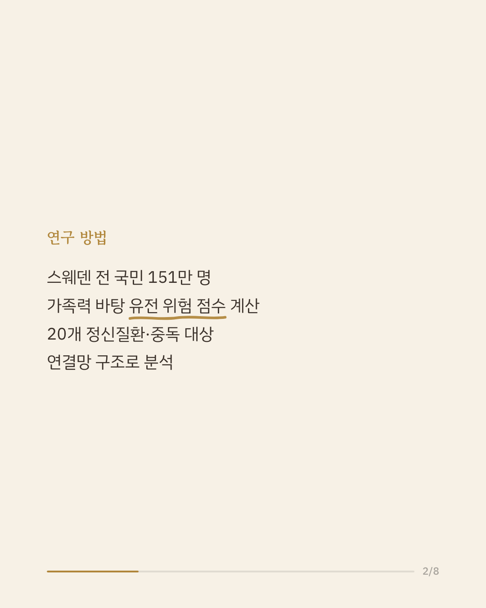
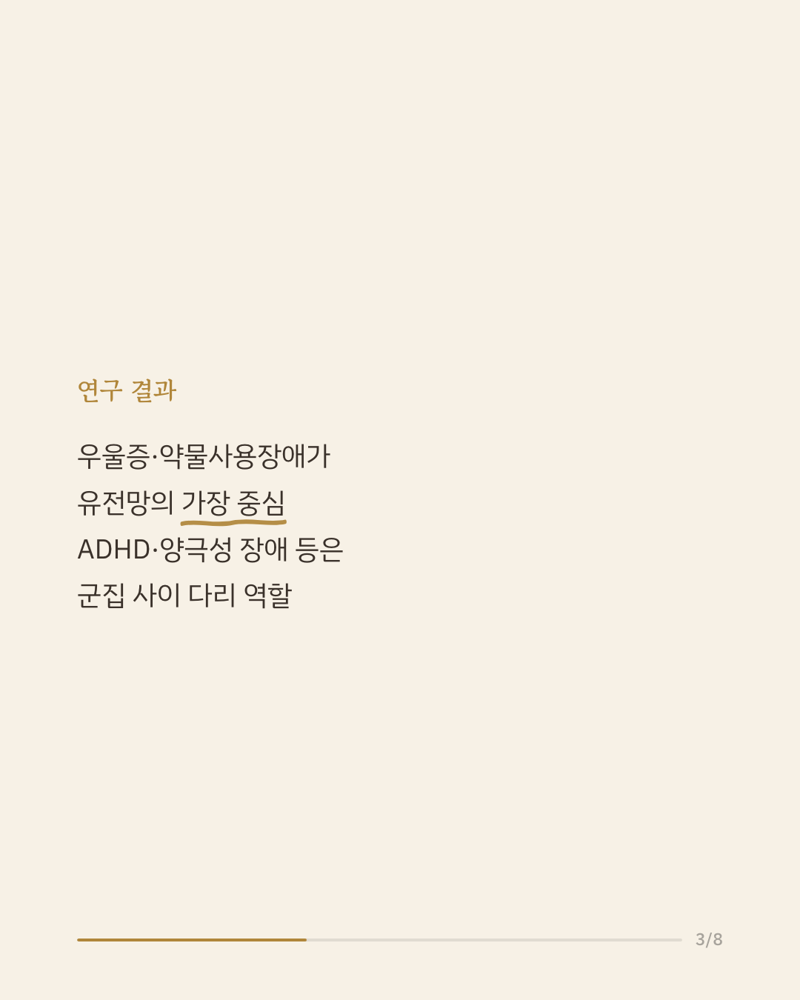
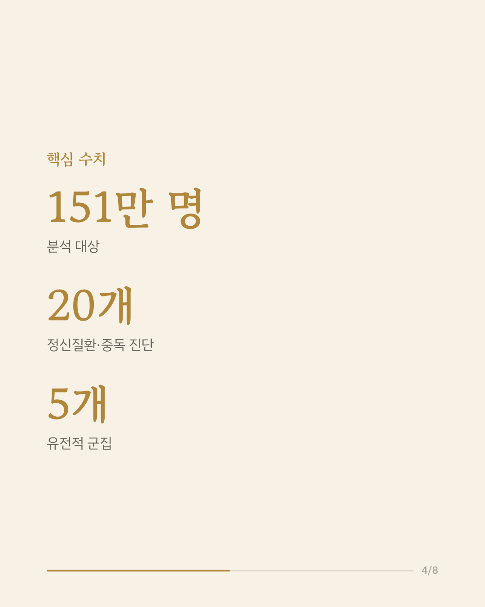
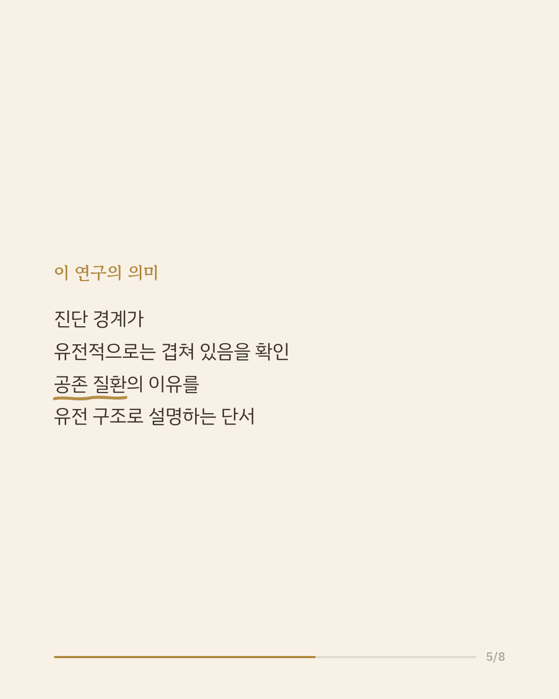
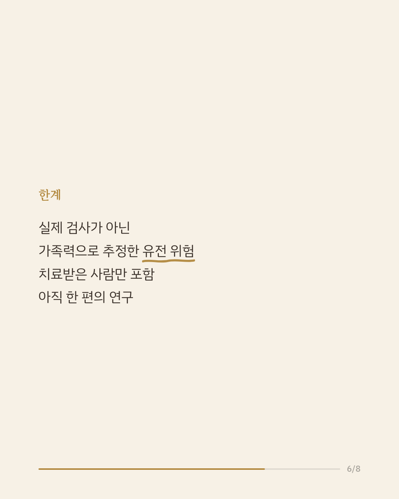
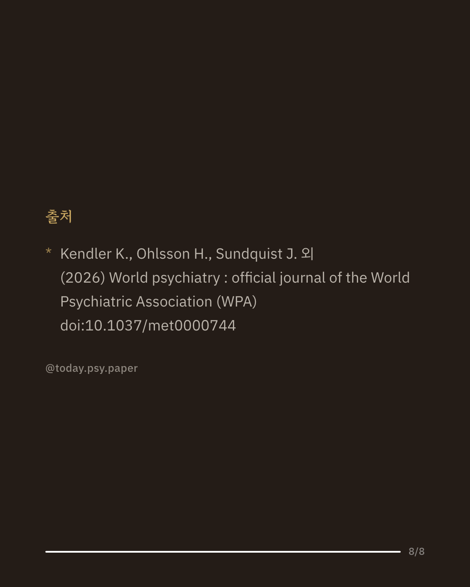

우울증, 조현병, 중독처럼 서로 다른 정신질환들은 실제로는 함께 발생하는 경우가 많습니다. 이런 공존 현상 뒤에 유전적으로 어떤 구조가 있는지는 그동안 명확하지 않았습니다. 이 연구는 스웨덴 국민 151만여 명의 자료를 활용해 20개 정신질환·중독 진단에 대한 가족 기반 유전 위험 점수를 계산하고, 이를 네트워크 분석으로 살펴봤습니다. 분석 결과 유전적 위험은 내재화, 외현화, 신경발달, 섭식, 정신병적 장애라는 다섯 개 군집으로 뚜렷이 구분되었습니다. 우울증과 약물사용장애가 전체 연결망에서 가장 중심적인 위치를 차지했으며, 양극성 장애는 조현병보다 우울증·조현정동장애와 유전적으로 더 가까운 것으로 나타났습니다. 이 결과는 현재의 진단 분류 경계가 유전적 구조와 항상 일치하지는 않을 수 있음을 보여줍니다. 다만 유전 위험 점수는 실제 유전자 검사가 아니라 가족력을 바탕으로 추정한 값이고, 분석 대상도 치료받은 사람으로 한정되어 있습니다. 단일 연구이므로 확대 해석은 조심해야 합니다. 출처: World Psychiatry (2026), 'Network analysis of the genetic relationships between twenty psychiatric and substance use disorders' #정신질환유전학 #유전위험 #정신건강연구 #논문리뷰 #조현병연구
python3 publish.py 42742582